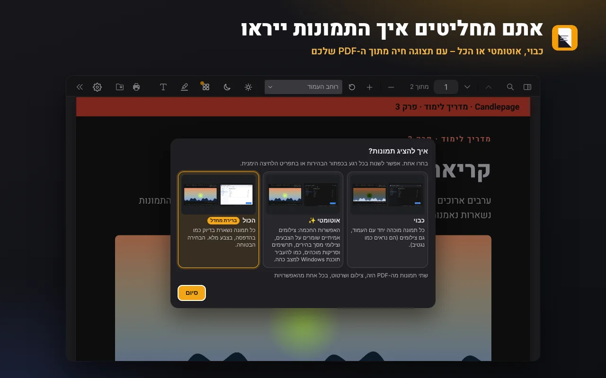
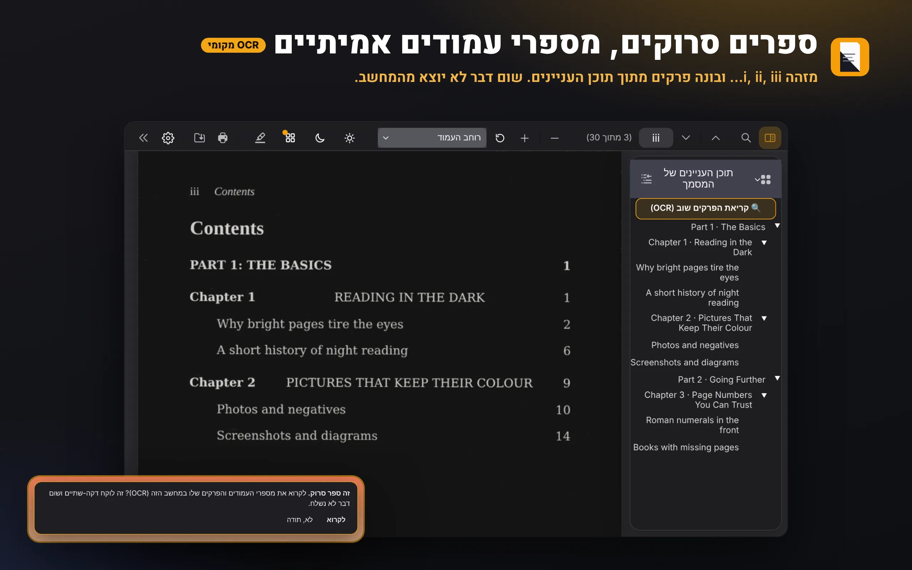
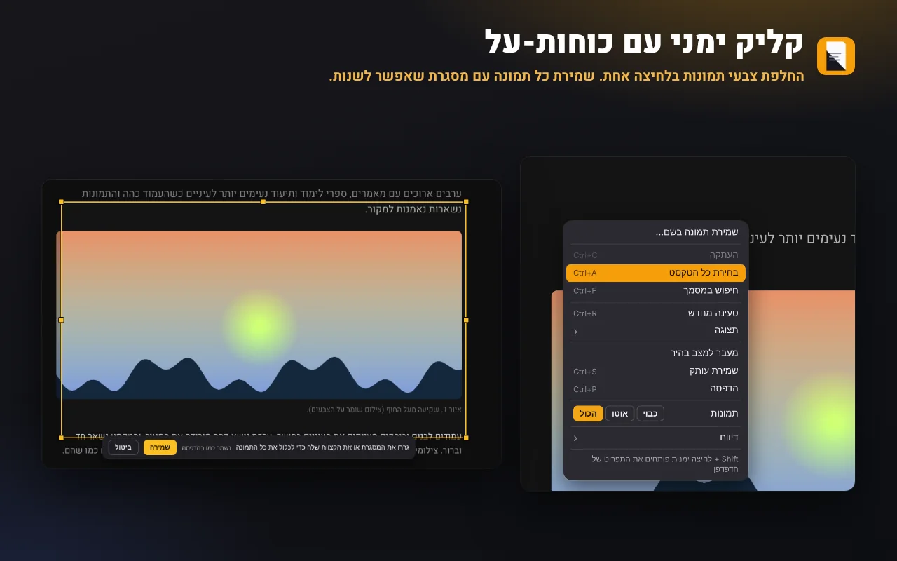

מצב כהה ל-PDF בכרום
PDF כהה. התמונות נשארות בצבעים שלהן.
רוב הכלים למצב כהה הופכים כל פיקסל, ולכן תמונות ותרשימים נראים כמו נגטיב. Candlepage מחשיך את הדף, שומר על התמונות אמיתיות, מוצא PDF בדפי אינטרנט וקורא ספרים סרוקים בלי אינטרנט, כדי שתוכלו ללמוד בשתיים בלילה בלי לכווץ את העיניים.





נסו את זה כאן
קריאה בלילה
ערבים ארוכים עם מאמרים וספרי לימוד נעימים יותר לעיניים כשהדף כהה והתמונות נשארות נאמנות למקור.
מבנה המסמך
Contents
| PART 1: THE BASICS | 1 |
| Chapter 1 Reading in the Dark | 1 |
| Why bright pages tire the eyes | 2 |
| A short history of night reading | 6 |
| Chapter 2 Pictures That Keep Their Colour | 9 |
| Photos and negatives | 10 |
| Screenshots and diagrams | 14 |
סריקה היא רק תמונות של עמודים, ולכן הקורא לא יודע מה מספרי העמודים והפרקים האמיתיים. Candlepage קורא אותם במחשב שלכם. שום דבר לא מועלה לשום מקום.
בנוי לשעות קריאה ארוכות
תמונות נשארות אמיתיות
תמונות, גרפים וכריכות שומרים על הצבעים המקוריים. בוחרים כבוי, אוטומטי או הכול, ורואים תצוגה חיה על ה-PDF שלכם.
מצב אוטומטי לצילומי מסך
חלון של תוכנה בהירה בתוך ה-PDF הופך לכהה, כמו מצב כהה שלה, ותמונות אמיתיות נשארות כמו שהן.
מוצא PDF בכל דף
פותחים את החלון הקופץ בדף אינטרנט ורואים כל קישור ל-PDF. פותחים אחד במצב כהה, או קופצים אליו בדף.
OCR מקומי לספרים סרוקים
קורא מספרי עמודים אמיתיים (גם i, ii, iii) ובונה פרקים מתוך תוכן העניינים. הכול רץ במחשב שלכם ושום דבר לא מועלה.
שמירת כל תמונה
קליק ימני על תמונה, גוררים מסגרת על התמונה כולה (גם אם ה-PDF פיצל אותה) ושומרים כהה או כמו במקור.
עברית ואנגלית
הממשק עובד בשתי השפות, כולל פריסה מימין לשמאל.
תוספות, רק כשאתם רוצים
תכונות אופציונליות. מפעילים או מכבים בהגדרות.
- כלי מתמטיקהניסיוני
- OCR מקומי לספרים סרוקים (שואל קודם, בכל ספר)
- ספרייה והיסטוריית קריאה
- Google Drive
שאלות נפוצות
איך מפעילים מצב כהה על קבצי PDF מהמחשב?
כרום חוסם תוספים מקבצים מקומיים כברירת מחדל. פותחים chrome://extensions, מוצאים את Candlepage, לוחצים על פרטים ומפעילים את Allow access to file URLs. מאותו רגע גם קבצי PDF מהמחשב נפתחים במצב כהה.
האם תמונות ותרשימים הופכים לנגטיב?
לא. Candlepage מחשיך את הדף ומשאיר תמונות, תרשימים וכריכות בצבעים המקוריים.
האם Candlepage חינמי?
כן, זה תוסף חינמי לכרום. אם הוא עוזר לכם, אפשר לתמוך בפרויקט ב-Ko-fi.
מה לגבי הפרטיות שלי?
דיווחי תקלות אנונימיים הם אופציונליים ונשלחים רק אם אתם מסכימים. מדיניות הפרטיות למטה מסבירה בדיוק מה נאסף.
לקרוא בנוחות כבר הלילה
Candlepage הוא פרויקט של אדם אחד. מצאתם באג או יש לכם רעיון? אני קורא כל הודעה.
דיווח על באגים: ben.meitav.work@gmail.com